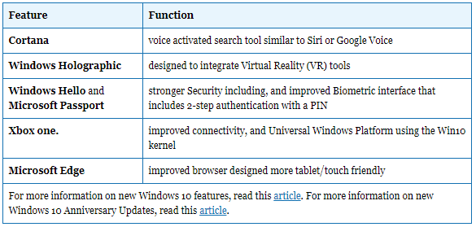

(軟體篇)Windows 8操作系統 <<
Previous Next >> (軟體篇)安裝Windows
(軟體篇)Windows 10操作系統
由於Windows 8旨在增強計算機行業的觸摸能力並在移動設備上使用更少的資源來使運行更清潔，因此Windows 10是2015年7月發布的下一個版本。Microsoft考慮了用戶的反饋和反饋以改善用戶Windows 10經驗
As Windows 8 is designed to enhance the computer industry move to touch capacity and run cleaner with fewer resources on mobile devices, Windows 10 is the next iteration released in the July 2015. Microsoft took into consideration the response and feedback from users to improve the user experience in Windows 10.
微軟Windows 10版本最重要的兩個策略是，除了企業版和Windows RT之外，所有Windows 7和Windows 8許可都可以免費升級到新操作系統。他們確實取消了Windows RT，並添加了教育版。微軟設想將所有用戶遷移到Windows 10，根據他們的行銷情況，它將通過OS同步所有新的主要技術，尤其是移動設備和軟件。微軟採用的第二種策略是，系統要求和許可結構與Windows 8基本相同。微軟從Windows 8的成功中汲取了許多Windows 10的新功能。
Two of the most important strategies for Microsoft’s Windows 10 release are that with the exception of Enterprise and Windows RT, all Windows 7 and Windows 8 license qualify for a free upgrade to the new OS. They did eliminate Windows RT and also added an Educational Enterprise edition. Microsoft envisions moving all users to Windows 10, which according to their marketing will synchronize all new major technology, especially mobile devices and software, through the OS. The second strategy that Microsoft employed is that the system requirements and licensing structure are essentially the same as Windows 8. Microsoft has incorporated many new features in Windows 10 based from Windows 8 success.
一些新功能包括：
Some of the new features include:

Metro介面
Windows 10通過在系統托盤中的“動作中心”中添加一個開關來改進功能，該開關允許用戶從台式機模式的平板電腦模式進入。 如下圖所示，Windows 8的Metro界面很明顯，但返回了“開始”菜單。 可以維護實時磁貼和多個電子郵件帳戶，而傳統的桌面程序既可以作為磁貼固定到Metro，也可以通過開始菜單輕鬆訪問。 任務欄的右側僅包含系統托盤，左側的圓形圖標代表Cortana。 除了語音激活外，Cortana還統一了搜索功能，以包括本地計算機和Internet。
Metro Interface
Windows 10 improves functionality by adding a switch in the Action Center, located in the system tray, which allows users to go from desktop mode tablet mode. As shown in the image below, the Metro interface from Windows 8 is apparent but with the return of the Start Menu. Live Tiles and multiple email accounts are maintained, while traditional desktop programs can either be pinned to Metro as a tile or simply accessed through the start menu. The taskbar includes only the system tray on the right and on the left the round icon represent Cortana. In addition to being voice activated, Cortana unifies the search feature to include both the local machine and the internet.
.png)
(軟體篇)Windows 8操作系統 <<
Previous Next >> (軟體篇)安裝Windows